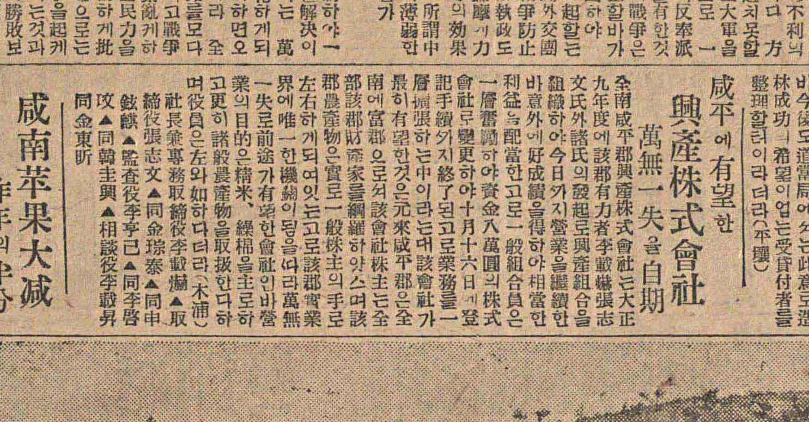
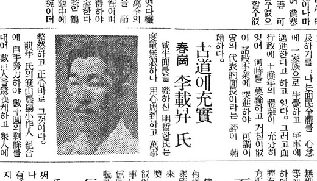

춘강 이재승 — 종가를 이은 장남
함평 이동범가, 128년의 인연 | 제6편
지난 5편에서는 『백범일지』의 ‘이 진사’, 고조부 석암 이동범 선생의 생애를 따라가 보았습니다. 이번에는 그 장남이자 종가를 이어받은 증조부, 춘강 이재승(春崗 李載昇, 1890~1962) 선생을 소개합니다.
1898년 김구 선생이 함평에 머물던 시절 집안에서 글을 배우던 어린 형제 가운데 한 사람이었고, 반세기 뒤 서울로 김구 선생을 찾아간 두 형제 가운데 한 사람이기도 합니다. 그 사이의 시간을 남아 있는 기록으로 하나씩 짚어 보려 합니다.
1. 장남의 자리
이재승 선생은 1890년 이동범 선생의 장남으로 태어났습니다. 김구 선생이 이 진사 댁에 머문 1898년에는 여덟 살 무렵이었고, 『백범일지』는 이 집에서 글을 배우던 형제로 이재혁·이재승의 이름을 적고 있습니다.
1917년 7월 8일 『매일신보』의 이동범 선생 인물 기사에는 “장자 재승 군(長子載昇君)”이라는 표현이 나옵니다. 기사는 이동범 선생이 장자에게 집안일을 맡겼다고 전하는데, 스물일곱 살의 장남이 이미 종가 살림의 중심에 서 있었음을 보여 주는 대목입니다.
2. 1923년, 두 번 등장한 이름
1923년은 이재승 선생의 이름이 신문에 두 번 등장한 해입니다. 그해 8월 5일 『동아일보』는 함평흥산조합의 정기총회 소식을 전하며 조합장으로 이재승 선생의 이름을 적고 있습니다.

같은 해 12월 15일 『동아일보』에는 민립대학설립운동 함평군부의 조직 소식이 실렸습니다. 조선인의 손으로 고등교육기관을 세우자는 전국적인 운동이었고, 이재승 선생은 이 함평군부에서 보관위원(保管委員)으로 선출되었습니다.

이 조직에서는 아우 이재혁 선생이 집행위원장으로, 이재승 선생이 보관위원으로 선출되었습니다. 같은 가문의 두 형제가 함평 지역의 민립대학설립운동 조직에서 각각 역할을 맡았다는 사실을 확인할 수 있는 기록입니다.
3. 함평흥산주식회사
1925년 10월 24일 『매일신보』는 함평흥산주식회사의 소식을 전하며 상담역(相談役)으로 이재승 선생을 적고 있습니다. 같은 기사에는 아우 이재혁 선생의 이름도 함께 보입니다.

같은 해 12월 『조선총독부관보』에는 이 회사의 설립등기가 실렸습니다. 다만 관보의 등기 임원 명단에는 상담역이 따로 나오지 않아, 이재승 선생의 상담역 직함은 『매일신보』 기사로만 확인됩니다. 저희는 이 두 자료가 각각 증명하는 범위를 나누어 적고 있습니다.
4. 춘강, 1938년의 기사
1938년 10월 4일 『동아일보』의 함평 소개 지면에는 이재승 선생을 다룬 독립된 인물 기사가 실렸습니다. 제목은 「古道에 充實 春崗 李載昇氏」, ‘옛 도리에 충실한 춘강 이재승 씨’라는 뜻입니다. 춘강(春崗)이라는 호도 이 기사에서 확인됩니다.

기사는 이재승 선생이 일제강점기에 함평면장을 지낸 이력이 있다고 소개합니다. 다만 정확한 재임 기간과 당시의 구체적인 직무는 확인되지 않아 추가 조사가 필요합니다. 같은 기사에 언급된 기산농장(箕山農場) 소작인조합 관련 활동 역시 역할과 실제 활동 내용을 별도의 자료로 검증할 예정입니다.
5. 1946년, 서울로 간 형제
광복 후인 1946년, 이재승 선생은 아우 이재혁 선생과 함께 서울로 김구 선생을 찾아갔습니다. 반세기 전 집에서 글을 읽던 어린 형제가 이제는 쉰을 넘긴 나이로 옛 손님을 다시 만난 것입니다. 이 재회의 이야기는 3편에서 자세히 소개했습니다.[주]
저는 이 장면을 떠올릴 때마다 시간의 길이를 생각하게 됩니다. 1898년의 보름에서 1946년의 재회까지, 그 사이를 이어 준 사람이 바로 종가를 지켜 온 장남이었다는 점이 저희 가족에게는 특별하게 다가옵니다.
6. 남은 질문들
이재승 선생은 1962년에 세상을 떠나셨습니다. 이 글의 생몰년은 제적등본을 기준으로 했으며, 족보에는 사망 연도가 1959년으로 적혀 있어 차이가 있습니다.
정리하면서 앞으로 확인할 질문도 분명해졌습니다. 1926년부터 1936년까지의 행적, 함평면장 재임 시기, 기산농장 소작인조합에서의 역할, 그리고 경남 양산 통도사의 한 기단에 새겨졌다고 전하는 「李東範 子 載昇」 각자의 내력입니다.
기록이 비어 있는 시기를 짐작으로 채우지 않고, 확인되는 만큼만 적어 가는 것이 이 연재의 원칙입니다.
다음 편에서는 이재승 선생의 아들이자 「光明」 휘호에 이름이 남은 저희 할아버지, 이상래 선생을 소개하겠습니다.
백범김구기념관 공식 인터뷰
함께 보기
- 전체 기록 아카이브 https://lsaru23-ai.github.io/hp-db-archive/
- X @hp_db_archive https://x.com/hp_db_archive
- Threads @hp_db_archive https://www.threads.com/@hp_db_archive
지난 글
- 제1편: ‘이 진사’는 누구였나 — 백범 김구와 함평 이동범가
- 제2편: 보름을 머문 이유 — 1898년, 함평의 은신
- 제3편: 1946년 재회와 光明 — 김구가 다시 찾은 인연
- 제4편: 종가와 이재혁 가옥 — 두 집에 남은 128년
- 제5편: 석암 이동범 — ‘이 진사’의 생애
주
[주] 『백범일지』 원서는 광복 후 찾아온 두 사람을 이 진사의 ‘종손’ 재승(在昇)·재혁(在赫)으로 적고 있으나, 족보와 1917년 『매일신보』 기사상 이동범의 아들 이재승(載昇)·이재혁(載赫)으로, 원서의 오기로 판단됩니다.
주요 참고자료
[1] 『매일신보』, 1917년 7월 8일, 「全南名士 李東範氏」.
[2] 『동아일보』, 1923년 8월 5일, 함평흥산조합 정기총회 기사.
[3] 『동아일보』, 1923년 12월 15일, 민립대학설립운동 함평군부 조직 기사.
[4] 『매일신보』, 1925년 10월 24일, 함평흥산주식회사 기사 / 『조선총독부관보』 제3988호(1925. 12. 4), 설립등기.
[5] 『동아일보』, 1938년 10월 4일, 「古道에 充實 春崗 李載昇氏」.
[6] 김구, 『백범일지』, 127쪽 및 336~337쪽.
[7] 제적등본 및 『함평이씨대동보』.
이 글은 문헌에서 직접 확인되는 사실과 집안의 전승을 구분해 작성했습니다. 신문 기사의 내용은 필자의 판독을 바탕으로 했으며, 추가 사료에 따라 보완할 예정입니다.